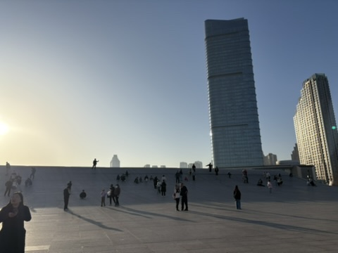

中国を旅する
ここでは、上海・杭州・大連のおすすめ観光スポットやアクセス、地下鉄の移動方法、そして旅行に必要な情報をまとめています。
上海｜近未来都市と歴史が融合する街

おすすめスポット
- 外灘（バンド）｜近代建築が立ち並ぶ美しいエリア
- 豫園と豫園商城｜古き良き中国を感じる庭園とショッピング街
- 東方明珠電視塔｜上海のシンボル！展望台からの眺めは絶景
アクセス情報
- 【浦東国際空港から市内】リニアモーターカー＋地下鉄2号線で約30分
- 【虹橋空港から市内】地下鉄2号線または10号線で人民広場駅まで直通
地下鉄での移動
上海の地下鉄は路線が豊富で、観光スポットのほとんどにアクセス可能。
交通カード「上海交通カード」を使うと便利です。
杭州｜「天国に一番近い」美しい湖の街

おすすめスポット
- 西湖｜世界遺産にも登録された美しい湖
- 霊隠寺｜中国最大級の仏教寺院
- 龍井茶村｜本場のお茶文化を体験できる
アクセス情報
地下鉄での移動
西湖周辺は徒歩とバス中心ですが、中心部までは地下鉄が便利。杭州地鉄アプリで路線図チェックがおすすめです。
大連｜レトロな異国情緒と港町の風景

おすすめスポット
- 中山広場｜歴史的建築物が集まる大連の中心地
- 星海広場｜中国最大級の広場、海沿いの絶景スポット
- 老虎灘海洋公園｜水族館・遊園地もある人気スポット
アクセス情報
- 【大連周水子空港から市内中心部】タクシーまたは地下鉄2号線で約20分
地下鉄での移動
大連の地下鉄は路線数は少なめですが、2号線で主要観光地にアクセス可能です。
旅行前に準備しておきたいこと
中国で必須アプリ
- WeChat（微信）｜連絡・支払い・情報収集すべてに必須
- 支付宝（Alipay）｜電子決済アプリ
- 百度地図｜Googleマップが使えない地域で便利な地図アプリ
→ 中国旅行に必要なアプリ・ビザ情報まとめ
ビザ情報
日本国籍の場合、30日以内の短期観光ならビザ不要（ただし最新情報を事前確認推奨）。
Wi-Fi・eSIMについて
- ポケットWi-FiやeSIMは出発前に予約・購入可能
- Google、LINE、Instagramなどは中国本土では直接使用不可（VPNが必要）
- 現地ではVPNアプリ（例：ExpressVPN、Surfsharkなど）を準備しておくと安心
現地で使える中国語フレーズ集
→ 旅行中に役立つ中国語フレーズ集はこちら
トップページに戻る